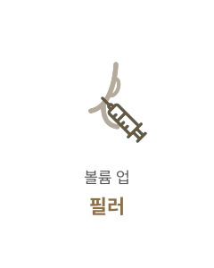

청춘을 되찾아주는
#귀앞절개
안면거상술
-

수술 시간
1시간
-

마취방법
수면/국소마취
-

내원치료
2~3회
-

회복기간
5~7일 후
귀앞절개 안면거상술이란?
귀 앞 5mm정도의 작은 절개 후 부드럽고 탄력있는특수밴드인 엘라스티꿈과 리본 등을 사용해
리프팅 후 남는 피부를 절개해 탄력을 복원시키는 리프팅 시술입니다.
BEFORE
AFTER
엘라스티꿈
연세자연미에서 사용하는 탄력밴드 ‘엘라스티꿈’은 위빙구조로 되어 있어 조직력이 좋아
피부염증을 일으키지 않고 인대역할을 하는 리프팅 실이 자연스러운 지지조직을 만들어
자연스럽고 탱탱한 얼굴라인을 형성하게 합니다.
실리콘
탄성이 강해
피부의 움직임을
방해 받지 않음


폴리에스터
인조 인대 역할로
기존 조직과
안정적으로 결합
엘라스티꿈
기존 녹는 실
움직이기 때문에 자연스러움
끊어지거나 부자연스러울 수 있음
지속성 효과가 오래 유지됨
유지기간이 짧은편
안면거상술핵심포인트
연세자연미는 피부조직 손상, 통증, 흉터의 최소화를 생각하며 정교하게 시술합니다.


당기는 힘
피부 부위에 따라 늘어짐의 정도가
다르기 때문에 조직을 당겨주는
강도를 조절합니다.

콤비네이션
부위별 처짐에 따라
복합 시술이 가능합니다.
않습니다.

테크닉
오랜 경험과 숙련된 기술력으로
결과에 대한 높은 만족도 를 드립니다.
함께하면좋은 시술
연세자연미성형외과는 개인의 상태에 따른 노화 증상과 원인에 맞는
여러가지 시술들을 복합적으로 진행하는 맞춤형 안티에이징 수술법으로
자연스럽게 젊어지는 아름다움을 선물해드립니다.


- 